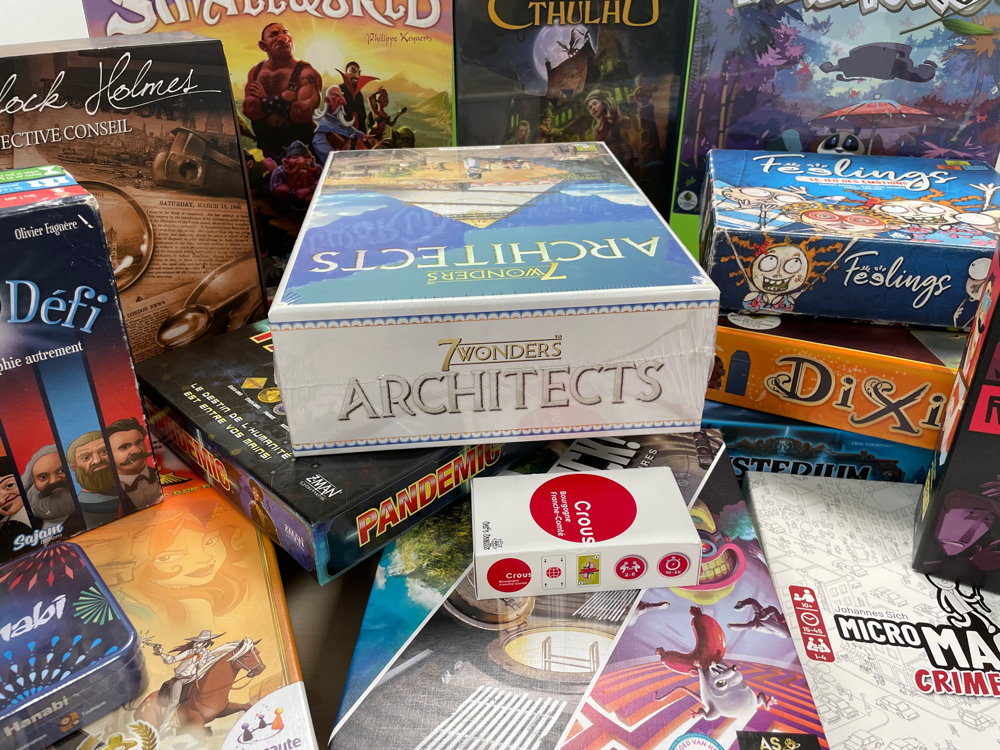

Bienvenue dans le jeu : Liens du CROUS.
Cette page est dédiée à la découverte des différents liens avec le CROUS et la Cité Internationale du Jeu. 🔎
Vous y retrouverez plusieurs liens cachés, des indices pour les trouver, des easter eggs, et surtout des informations essentielles sur les meilleurs jeux à découvrir.
Vous pourrez voyager au fil des années.
À VOUS DE JOUER !
À la Cité du jeu, plusieurs jeux avec l’as d’or 🃏 sont disponibles.
Comme : 7 Wonders Architects, Azul, Unlock ou encore Dixit et le nouveau jeu du CROUS....
